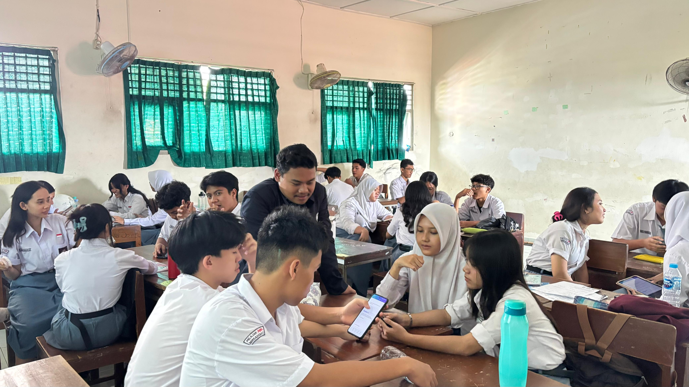
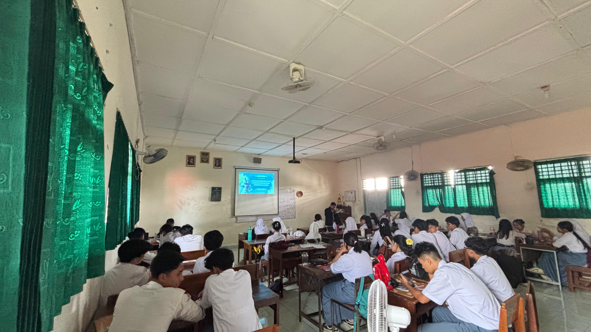

Video Praktik Pembelajaran Siklus 3
Rekaman video pembelajaran model PjBL pengolahan data terpadu di Lab Komputer SMAN 4 Yogyakarta:

Pengolahan Data Kuantitatif & Visualisasi Informasi di Laboratorium
Guru Model: Nur Isnanto Nugroho, S.Pd. • Dosen: Dr. Nuryake Fajaryati, S.Pd.T., M.Pd. • Pamong: Titis Widowati, S.T.
Artefak Pendukung Pembelajaran
Klik tab di bawah untuk meninjau secara mendalam perangkat kurikulum Siklus 3 yang telah diujikan:
Dokumentasi Kegiatan Siklus 3
Suasana praktikum pengolahan data spreadsheet peserta didik di laboratorium komputer SMA Negeri 4 Yogyakarta:

Apersepsi & Review SMP
Guru menanyakan pengalaman awal Excel dan memaparkan urgensi otomatisasi dataset.

Praktikum Formula Excel
Siswa mempraktekkan penulisan rumus =SUM, =AVERAGE, dan =IF bersyarat di komputer lab.

Bimbingan Tutor Sebaya
Siswa yang telah mahir membantu rekannya memvalidasi sel absolut ($) dan pemformatan chart.
Uji Posttest & Refleksi
Pelaksanaan posttest formatif untuk mengukur efektivitas pembelajaran proyek spreadsheet.